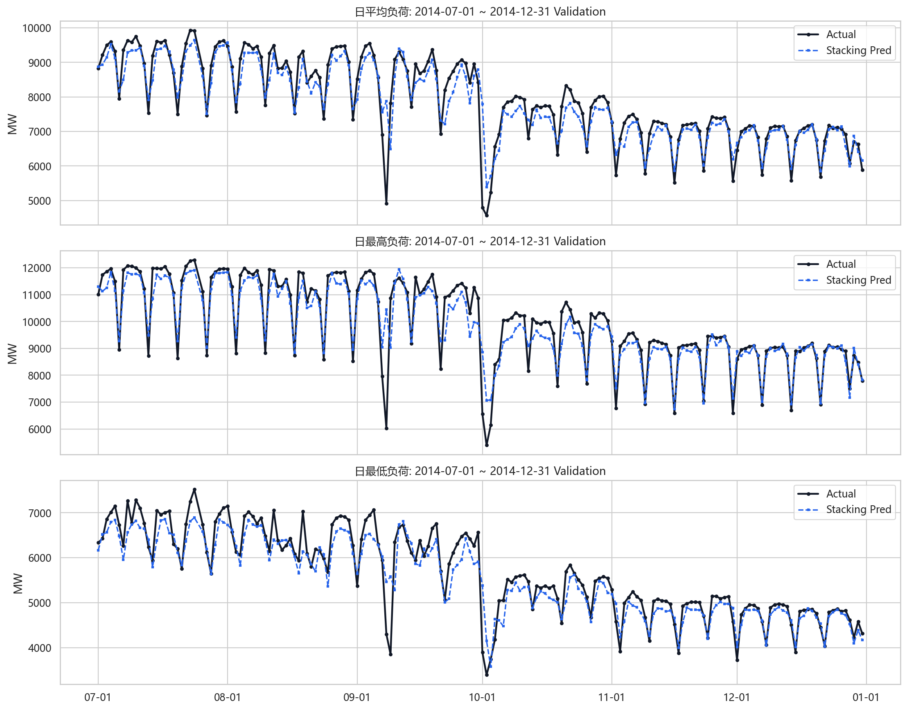
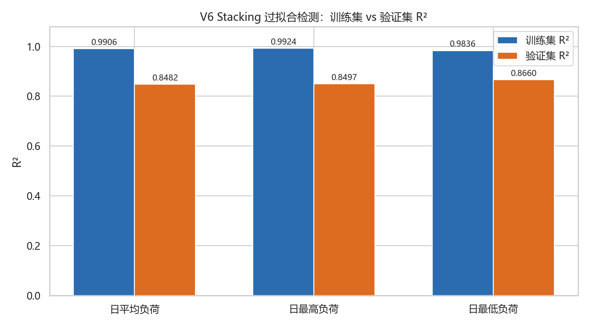
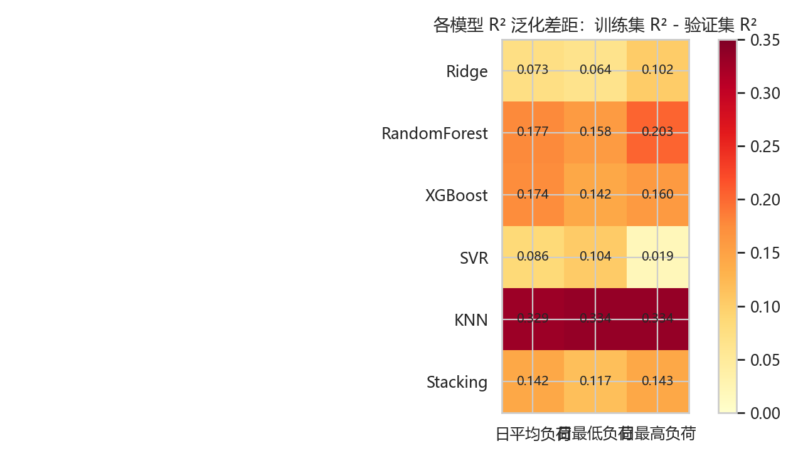
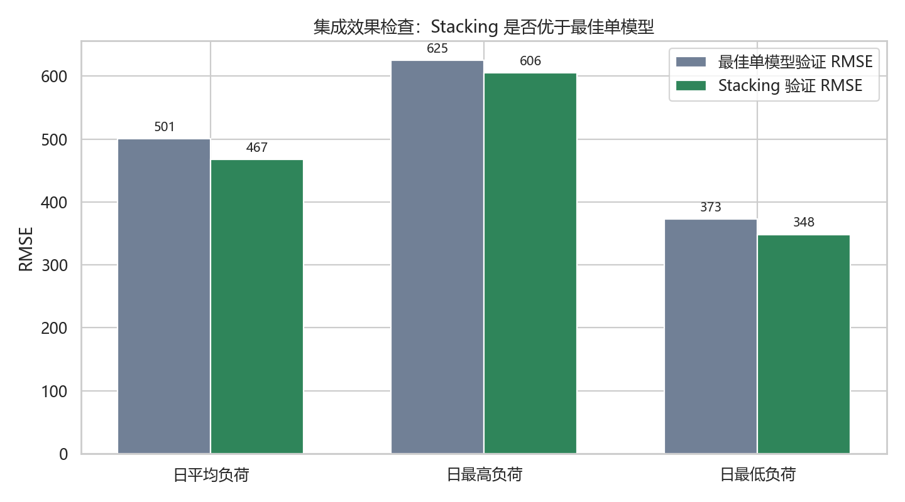
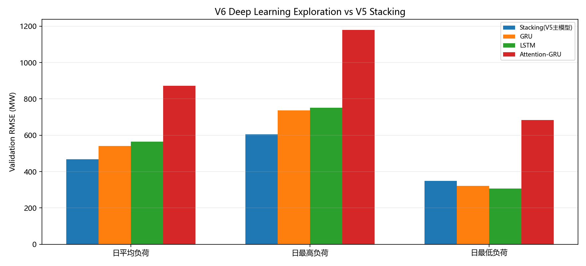
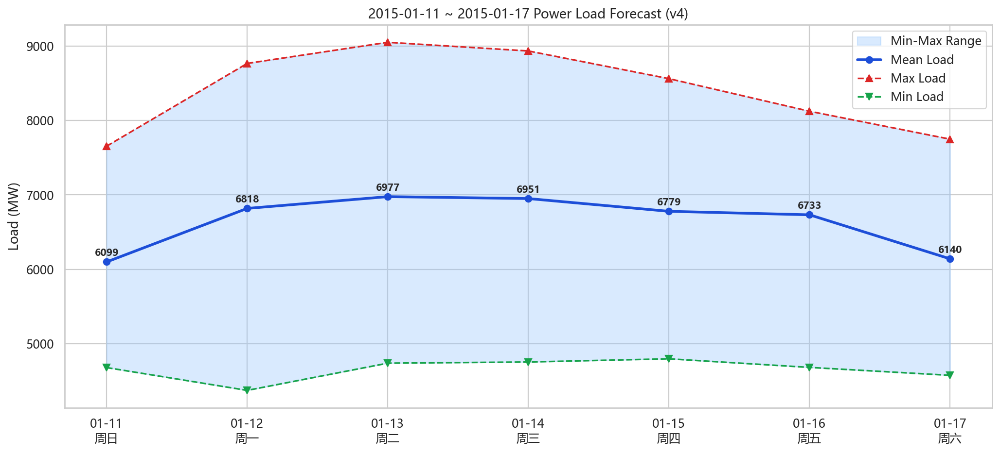

训练集平均 R²
0.9889
2012-01-15 至 2014-06-30
Model Analysis
本页基于 V6/V6-1 实际训练日志、保存模型和深度学习实验结果整理，说明 Stacking 主模型为什么有效、哪里存在过拟合风险，以及预测值如何保持业务量纲和物理约束。
Stacking 平均训练集 R² 为 0.9889，验证集平均 R² 为 0.8546。这说明模型存在过拟合倾向，但在 2014 下半年未参与训练的数据上仍能解释约 85% 的负荷波动。
Model
| 目标 | RMSE | MAPE | R² |
|---|
Generalization
Weather Factors
| 变量 | 系数 | p值 |
|---|
Process Evidence
下面保留了本项目建模过程中的关键结果图，覆盖训练验证表现、模型泛化差距、Stacking 与单模型对比、验证期拟合、最终预测以及深度学习探索，方便答辩或对接人员快速追溯“为什么选这个模型”。






Overfitting Check
| 预测目标 | 训练集 R² | 验证集 R² | R² 差距 | 训练 RMSE | 验证 RMSE | 风险判断 |
|---|---|---|---|---|---|---|
| 日平均负荷 | 0.9906 | 0.8482 | 0.1424 | 142.55 | 467.33 | 有过拟合倾向 |
| 日最高负荷 | 0.9924 | 0.8497 | 0.1428 | 165.76 | 605.54 | 有过拟合倾向 |
| 日最低负荷 | 0.9836 | 0.8660 | 0.1175 | 136.91 | 348.43 | 有过拟合倾向 |
Stacking Structure
三个目标分别训练一套 Stacking。内部基模型为岭回归 Ridge、随机森林 RandomForest、极端梯度提升 XGBoost、支持向量回归 SVR、K近邻回归 KNN，元学习器为岭回归 Ridge(alpha=10.0)，Stacking 参数为 cv=3。
Meta Weights
| 目标 | 岭回归 Ridge |
随机森林 RandomForest / RF |
极端梯度提升 XGBoost |
支持向量回归 SVR |
K近邻回归 KNN |
截距 intercept |
|---|---|---|---|---|---|---|
| 日平均 | 0.4212 | -0.0582 | 0.7009 | -0.1194 | 0.0555 | 38.84 |
| 日最高 | 0.3086 | -0.0412 | 0.8345 | -0.2141 | 0.0749 | 422.79 |
| 日最低 | 0.2584 | 0.0751 | 0.7734 | -0.1489 | 0.0457 | 20.88 |
极端梯度提升 XGBoost 权重最高，说明它是主贡献模型；支持向量回归 SVR 权重为负，说明元学习器在纠正其系统性偏差；K近邻回归 KNN 权重较小，说明其训练集记忆性强但泛化贡献有限。
Tuning Parameters
| 目标 | 模型 | 关键参数 | 验证表现/风险 |
|---|---|---|---|
| 日平均 | 极端梯度提升 XGBoost | n_estimators=565, max_depth=11, learning_rate=0.0283, subsample=0.8762 | R²=0.8258；深树带来较强拟合能力 |
| 日最高 | 极端梯度提升 XGBoost | n_estimators=473, max_depth=5, learning_rate=0.0593, subsample=0.7072 | R²=0.8399；泛化较好 |
| 日最低 | 极端梯度提升 XGBoost | n_estimators=135, max_depth=3, learning_rate=0.1683, reg_alpha=0.0634 | R²=0.8462；相对更克制 |
| 日平均 | 随机森林 RandomForest / RF | n_estimators=162, max_depth=16, min_samples_leaf=2 | 训练拟合强，验证 R²=0.7982 |
| 日最高 | 随机森林 RandomForest / RF | n_estimators=164, max_depth=21, min_samples_leaf=1 | 树深较高，是过拟合来源之一 |
| 日最低 | 随机森林 RandomForest / RF | n_estimators=420, max_depth=18, min_samples_leaf=4 | 验证 R²=0.7983 |
| 三目标 | K近邻回归 KNN | n_neighbors=5 或 7, weights=distance | 训练集近似记忆，验证 R² 约 0.66-0.67 |
Standardization
z = (x - μ) / σ。随机森林 RandomForest 和极端梯度提升 XGBoost 不依赖标准化。目标 Y 未做标准化，因此输出直接是 MW，不需要目标逆转化。
y = z * σ_y + μ_y 逆转化回 MW。目标均值约为：
日平均 6802.377、日最高 8648.174、日最低 4746.300；目标标准差约为：
1387.580、1804.136、1016.521。
Correction
日最低负荷 ≤ 日平均负荷 ≤ 日最高负荷，且负荷值必须大于 0。最终 2015-01-11 至 2015-01-17 的 Stacking 预测已检查通过。
若未来接入实时预测接口，建议在后端统一增加纠偏层：先将三个预测值按业务含义排序或裁剪，再输出到网页，避免模型偶然产生违反物理规律的结果。
Deep Learning Exploration
| 模型 | 日平均 R² | 日最高 R² | 日最低 R² | 设置 | 结论 |
|---|---|---|---|---|---|
| GRU | 0.7969 | 0.7773 | 0.8864 | seq_len=28, hidden_dim=32, cuda | 泛化尚可，但整体不如 Stacking |
| LSTM | 0.7788 | 0.7686 | 0.8960 | AdamW lr=5e-4, weight_decay=1e-4 | 最低负荷表现好，平均/最高偏弱 |
| Attention-GRU | 0.4701 | 0.4303 | 0.4854 | Temporal Attention + Dropout=0.1 | 明显欠拟合/不稳定，不适合作主模型 |
clip_grad_norm_=0.5。但由于日粒度样本量有限，GRU/LSTM 没有稳定超过 Stacking；Attention-GRU 参数结构更复杂，反而表现较差。因此深度学习适合作为技术探索和对比，不宜替代当前主模型。
Final Judgment
有用。验证集平均 R²=0.8546，MAPE 约 4.326%，说明模型不是单纯背训练集，对未来半年数据仍有稳定解释能力。
模型复杂度偏高，K近邻回归 KNN 训练集记忆性强，随机森林 RandomForest 和极端梯度提升 XGBoost 容量较大，Stacking 内部 cv=3 不是严格时间序列 OOF。
保留 Stacking 作为主模型，但可精简为岭回归 Ridge + 随机森林 RandomForest + 极端梯度提升 XGBoost，并把内部交叉验证改成 TimeSeriesSplit 或手工滚动 OOF。